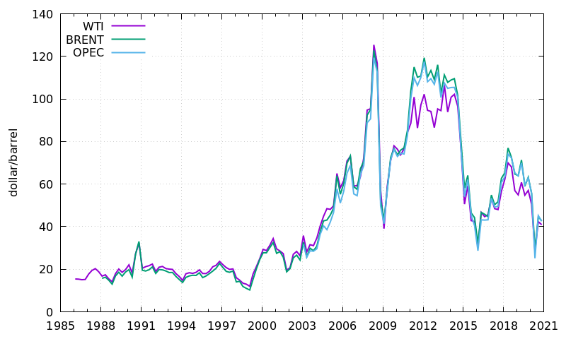
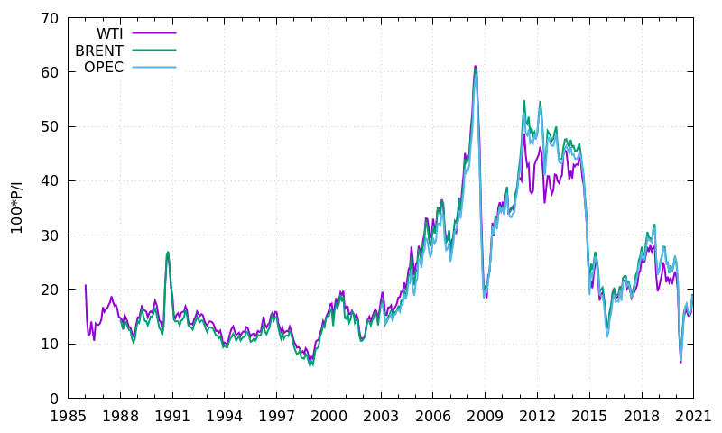
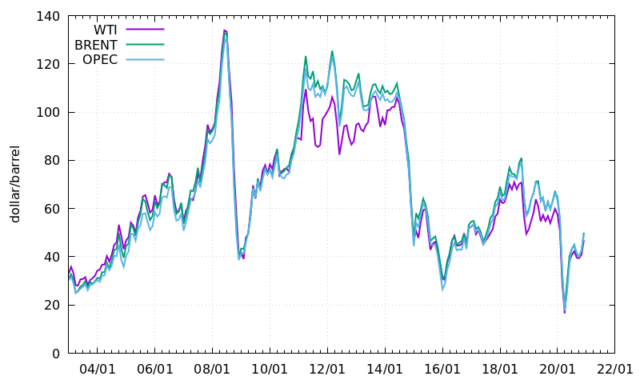
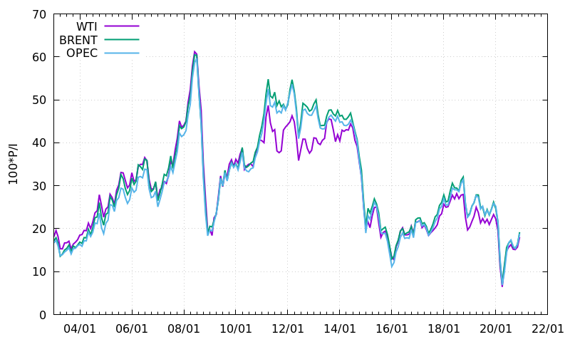
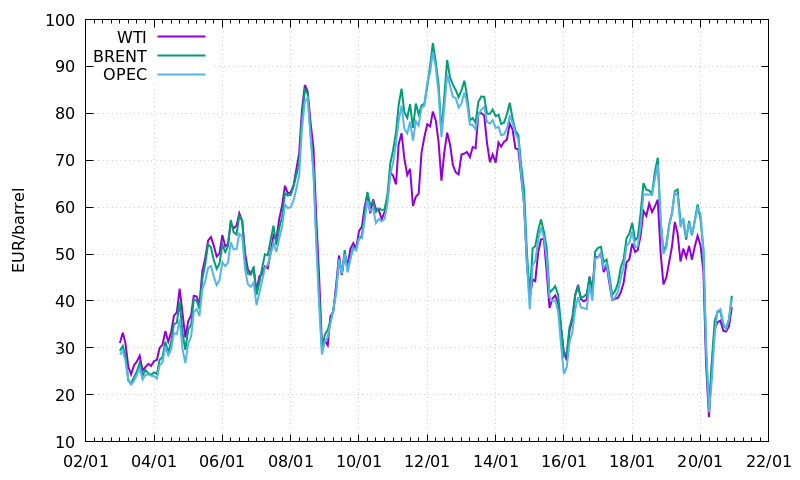
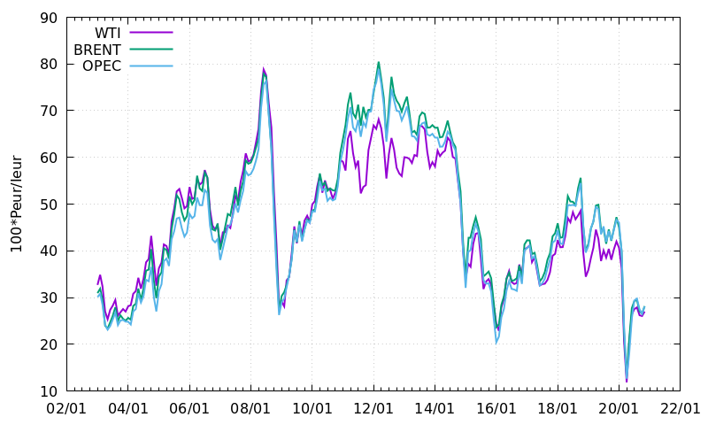
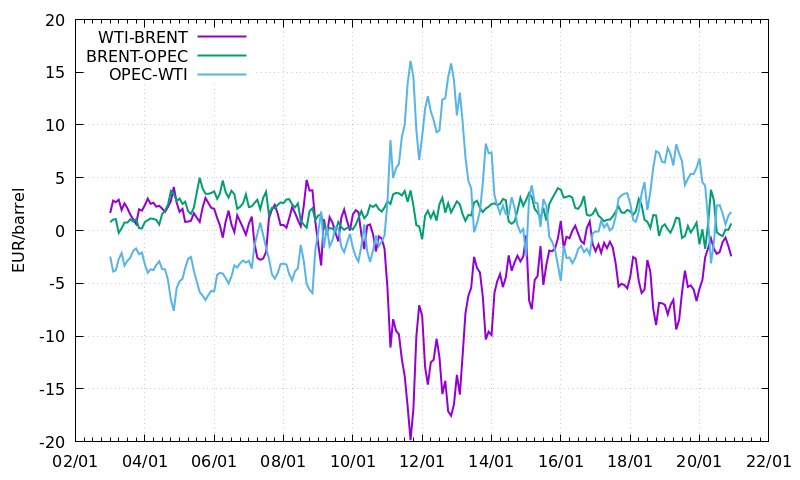
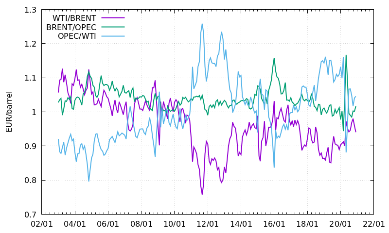

Short Report on Oil Price History
Table of Contents
- Authors
- Giulio Bottazzi
- Date
- January 14 2021
- Revision
- 1.0
Data Sources
In this report three spot price indexes for the worldwide oil market are considered. The first index is the West Texas Intermediate (WTI) which prices partially refined oil from United States. The second is the Brent Crude. This index is a price average of the supply by several oil fields in the Northern See. This is considered the reference index for the Europe-originated oil. The last index is the Organization of the petroleum Exporting Countries (OPEC) Reference Basket introduced on 16 June 2005. It is currently made up of the prices for oil produced in the following countries: Saharan Blend (Algeria), Girassol (Angola), Oriente (Ecuador), Iran Heavy (Islamic Republic of Iran), Basra Light (Iraq), Kuwait Export (Kuwait), Es Sider (Libya), Bonny Light (Nigeria), Qatar Marine (Qatar), Arab Light (Saudi Arabia), Murban (UAE) and Merey (Venezuela). Price history for the three indexes are collected from different sources.
The Federal Reserve Economic Data(FRED) service of the Federal Reserve Bank of St.Louis provides the data for the first two price series. The prices for WTI are based on quotes reported in Wall Street Journal on the Spot Oil Price: West Texas Intermediate. The prices for the Brent Crude are instead collected by the U.S. Energy Information Administration. Data are monthly and expressed in dollars/barrel.
Price history for the OPEC Basket is provided by the Organization of the petroleum Exporting Countries itself. Data are available since 2003 and are expressed in dollar/barrel on a daily basis. Simple average is used to obtain monthly data.
To track the price evolution in real terms, the U.S. Consumer Price Index for all urban consumers (CPI-U) is used as provided by the U.S. Department of Labor, Bureau of Labor Statistics Data. Data are monthly and the index base-level of 100 is obtained averaging prices in the time period 1982-1984.
For the Euro area, the deflator used is the HCPI (harmonized consumer price index) for 'ALL Indices' provided by Eurostat. Data are monthly and the index base-level of 100 is for prices in 2005.
Finally, prices in Euro currency are computed using the monthly exchange rates provided by the Federal Reserve Bank of St.Louis.
Charts
Long run dynamics

Figure 1: Nominal oil prices in dollar/barrel since January, 1986.

Figure 2: Oil prices in dollar/barrel since January, 1986 expressed in year 1983 dollars. Real prices is computed as 100*P(t)/I(t) where P(t) is the nominal price and I(t) is the deflator index discussed above.
Price movements since 01/01/2003

Figure 3: Nominal oil prices in dollar/barrel since January, 2003.

Figure 4: Oil price in dollar/barrel since January, 2003 expressed in year 1983 dollars. Prices are computed as 100*P(t)/I(t) where P(t) is the nominal price and I(t) is the deflator index discussed above.

Figure 5: Oil price in Euro/barrel since January, 2003. Prices in Euro are computed starting from prices in Dollar and using monthly averaged exchange rates.

Figure 6: Oil price in Euro/barrel since January, 2003 expressed in year 2005 Euro. Prices are computed as 100*Peur(t)/Ieur(t) where Peur(t) is the nominal price in Euro and Ieur(t) is the deflator index of Euro area discussed above.
Price spread since 01/01/2003

Figure 7: Nominal difference of the three major indexes in eur/barrel since January, 2003.

Figure 8: Ratio of the three major indexes since January, 2003.
Download
Data used in the previous tables can be downloaded from the links below, in plain ASCII format with space separated fields.
West Texas Intermediate Oil Price
West Texas Intermediate Rescaled Prices
West Texas Intermediate Price in Euro
West Texas Intermediate Rescaled Price in Euro